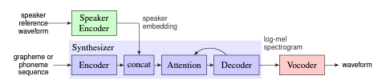

Real-Time Voice Cloning for Spanish Speakers
Manolo Canales Cuba, Alex Steve Chung Alvarez
Abstract:
Text to Speech has been a very popular field for research in the last three years. However, there are not many text to speech projects focused in the spanish language. The main problem of text to speech is that a big dataset of a target voice is needed in order to train a model with that voice. To overcome this problem, real-time voice cloning has been studied since 2018. In that year, the first implementation of real-time voice cloning was published. We use this open source code to train a spanish model of the synthesizer for real-time voice cloning. We provide the first pre-trained spanish model of the synthesizer to the community.
System architecture:

Source: Transfer learning from speaker verification to multispeaker text-to-speech synthesis.
Audio Samples for Original Test Audios
| Model | Unseen Speaker (test) | |
| Ground truth | ||
| Common Voice 100K steps | ||
| Common Voice 125K steps | ||
| Common Voice 150K steps | ||
| Common Voice 175K steps | ||
| Common Voice 200K steps | ||
| Common Voice 225K steps | ||
| Multilingual LibriSpeech | ||
| Peruvian Spanish 50K steps | ||